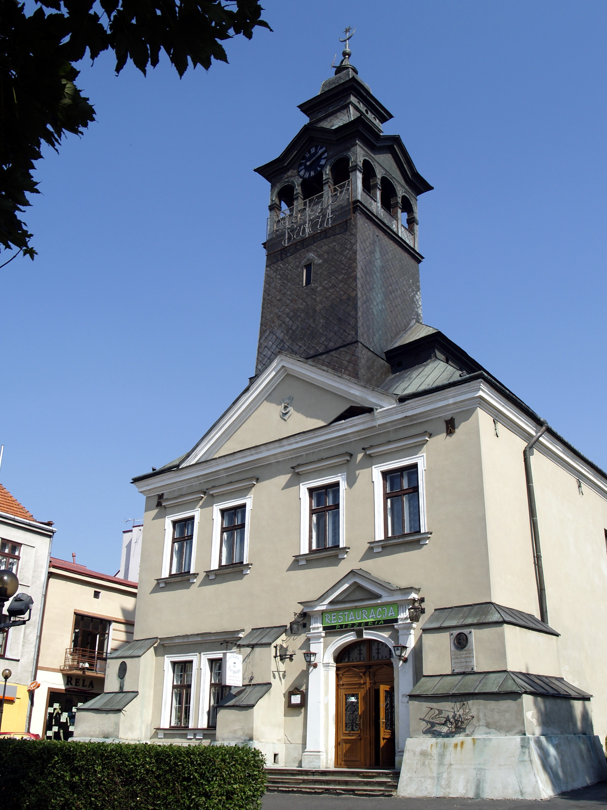
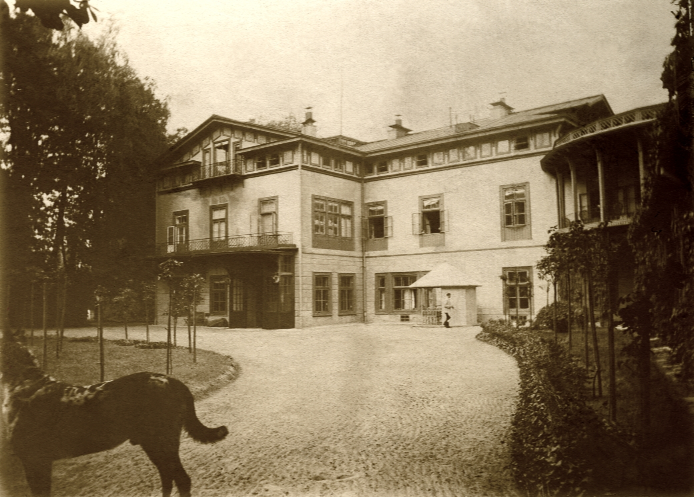

Informacje ogólne:

Przeworsk to urokliwe miasto położone w województwie podkarpackim, które przyciąga swoją kameralną atmosferą i bogatym dziedzictwem kulturowym.
Znajduje się około 40 km na wschód od Rzeszowa, będąc malowniczym przystankiem na trasie turystycznej Podkarpacia.
Miasto, choć niewielkie, jest pełne historii, która harmonijnie łączy się z nowoczesnymi akcentami życia lokalnego.
Przeworsk wyróżnia się ciekawym układem urbanistycznym, licznymi zabytkami oraz bliskością przyrody. Miasto jest miejscem pełnym życia, w którym spotyka się tradycja i nowoczesność, a bogaty kalendarz wydarzeń kulturalnych przyciąga zarówno mieszkańców, jak i turystów.
Przeworsk wyróżnia się ciekawym układem urbanistycznym, licznymi zabytkami oraz bliskością przyrody. Miasto jest miejscem pełnym życia, w którym spotyka się tradycja i nowoczesność, a bogaty kalendarz wydarzeń kulturalnych przyciąga zarówno mieszkańców, jak i turystów.
Historia miasta:

Przeworsk ma głęboko zakorzenioną historię sięgającą czasów średniowiecza. Pierwsze wzmianki o miejscowości pochodzą z XIII wieku, a prawa miejskie nadano Przeworskowi już w roku 1394. Miasto pełniło ważną funkcję na szlaku handlowym, dzięki czemu mogło szybko się rozwijać i zdobywać znaczenie w regionie. W czasach Rzeczypospolitej Przeworsk był miejscem, gdzie krzyżowały się różnorodne wpływy kulturowe, a jego mieszkańcy z dumą pielęgnowali tradycje.
W okresie zaborów Przeworsk znalazł się pod zaborem austriackim, co odcisnęło piętno na jego architekturze i układzie urbanistycznym. Po odzyskaniu niepodległości przez Polskę miasto powróciło do dynamicznego rozwoju, a dziś możemy podziwiać liczne zabytki, takie jak gotycki kościół św. Barbary, późnorenesansowy Ratusz, klasztor i sanktuarium Bożogrobców czy dawne cmentarze.
W okresie zaborów Przeworsk znalazł się pod zaborem austriackim, co odcisnęło piętno na jego architekturze i układzie urbanistycznym. Po odzyskaniu niepodległości przez Polskę miasto powróciło do dynamicznego rozwoju, a dziś możemy podziwiać liczne zabytki, takie jak gotycki kościół św. Barbary, późnorenesansowy Ratusz, klasztor i sanktuarium Bożogrobców czy dawne cmentarze.
Ciekawostki: